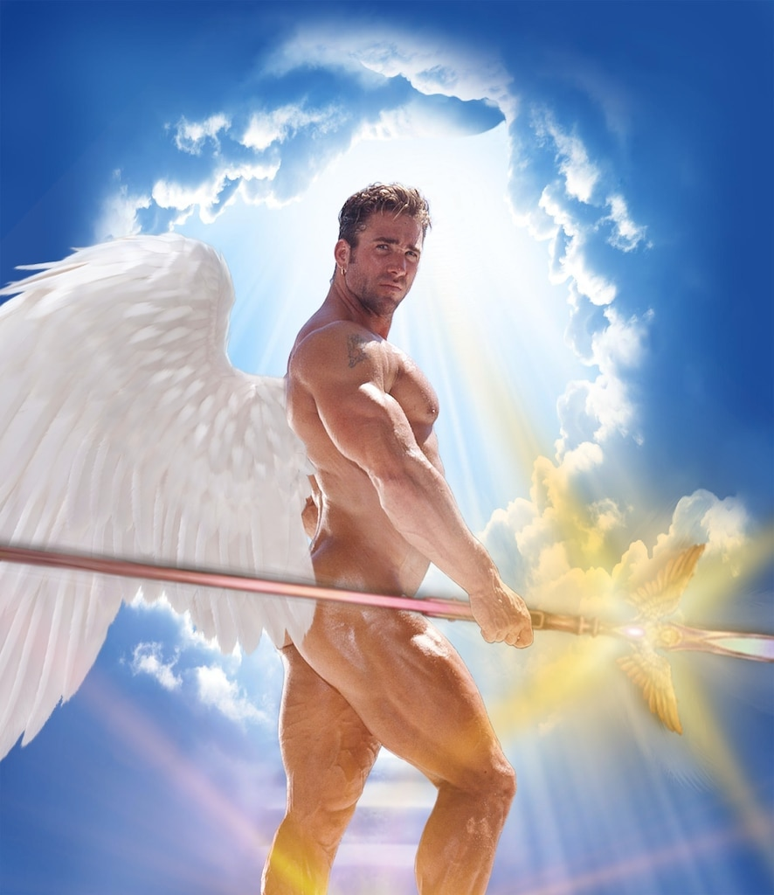

Мы жители великой державы – Республики Свободной Гачляндии. После долгих лет (месяцев (возможно даже недель)) угнетений и этнических чисток, мы откололись от некогда братского нам Межпространственного Бара. Сейчас наша цель не война, не сепаратизм, а свобода. Да, именно жажда свободы ведет нас вперед на новые свершения. Мы все равны, все братья и братья-без-членов, ведомые великим Билли в попытках построить истинный cumмунизм. Присоединяйтесь к нам и вы поймете, что нет ничего лучше, чем глоток свободы (cum).
Гачляндия была создана 18 марта нашим Прародителем Сабиром.
1) Правил нет! И: Развлечения и обсуждения любого рода разрешены и приветствуются. Хотите обсуждать настолки? Прошу! Хотите решить кто из трапов в аниме самый лучший? Дерзайте! Желаете обсудить принципы корпускулярно волнового дуализма? Штош. Нашли сотоварища из айзека и хотите поболтать? Блять…ладно.
В Свободной Гачляндии приветствуется вера в Билли. Вместо аминь мы говорим cumинь. Если возникают трудности, просим Билли помочь нам. Если нам хорошо, то благодарим Билли за все. И главное запомни наш слоган - May the cum always be with you!
Кто такой Генсекс? ГенСекс (Генеральный Сексретарь) - Мужчина среди Мужчин и Мужчин-без-членов. Официальный представитель Республики Свободной Гачляндии. ГенСекс ведёт Гачляндию вперёд, назад, направо и налево, но всегда наверх, смотря куда надо. Каждый ГенСекс, как fist в ass, расширяет горизонты. Как выбирают ГенСекса? Новый ГенСекс выбирается 21(очка) каждого второго месяца. Голосование начинается 14 числа того же месяца и длятся неделю. Кандидаты начинают представлять свои предвыборные кампании 7 числа того же месяца.
Сабир (Себастьян) – (титан) основатель. Был первым средь сепаратистов, создавших великое государство, но ни в коем случае не стоящий во главе. Отдых? Не слышал. Дед.
Олег (мужчина) – правая рука Билли. Глубоко в ass, но при этом даёт cum. Был идеологическим на(кон)чалом Свободной Гачляндии. Олег.
Ага (Угу, Да, Согласен, Возможно, Скорее всего, Подтверждаю. ГугуГагаГиги, Гиги за шаги, Аğали Хəррингтон) – министр по сосущим делам. В момент создания страны, был неподалеку и делал квест про вампиров. Его сосущий потенциал был подмечен и избежать великой но гордой ответственности ему не удалось. Посылает Памятку. Нет? Ага!
Томбик (кто-то называет его Тамиком, пиздят как дышат) – практикант гачи, сношатель с пандами, мотыговое чудовище, а самое главное министр культуры и просвещения. Смотрит по сезону аниме в день, в настолках любит когда жарят в очко (мужчина). Пианист и СЕКСофонист.
Ахмед (Омлет, Ахмад ти контемпорари) – ВОЙНААААААААААААААА. Министр обороны. Мы не воюем, на нас нападают и мы должны защищаться. Ахмед – тот, кто этим занимается. Подруговое чудовище.
Саня (Саша, Александр, Александра, Шурик, Искяндяр) – еврей. На этом всё сказано. Он наш казначей. Но он еще поляк, немец, русский, татар и лучший друг генсекса. Поэтому его никому не шпёхать. Смотрел meatspin до 100-ой итерации (не гуглите). Хаванский.
Камилла (Ками, ками хуями, пирожочек, Cumилла) – министр религиозного просвещения. Брат без члена. Смотрит, что бы соблюдались законы шари…Биллиата. Никакого гейства, только крепкий мужской секс! Написала Биллиблию. Аватар Ками: легенда о тысячи смен в день.
УдЖал (Шпоньк, «Тот парень с татухами, как его звать?») – ну ясен хер кто он. Очевидная правда временами может избегать наше восприятие. Он там, чтобы указать всем на неё. Никогда не может поесть свой донЕр, не объяснив 5-6 игр постояльцам тика (добрая душа). Ну чё, дуэльку? Ропаририропарира.
Мурад (Муртуза, Муртузабль, Филипинец) – черный как смола, грязный как смола, смола. Министр здравоохранения, проверят на себе отравленные вина и прочий джанкфуд, чтобы другие знали, что может разорвать их ass. Черный иисус.
Чингиз (Чина, ору)) – министр четких вбросов. Когда говорит, все орут. Когда молчит, все могут и не орать. Не живет с Агой, у них только секс. У него порвана цел…маска. Клепает Стикеры. *вставить эмоджи стоунхеджа*. 🗿
Максим (Макс, Пукка, пулемёт, батя настолок) – министр спорта и протеина в cum. Побеждает всех и всегда в своих любимых настолках спокойно попыхивая своим пауэр банком. Злой гуманоид.

Денис (неактивный гражданин, крестьянин, пососин) – министр хентая. Требуются еще комментарии? Создатель триллиона пабликов. Боку но пико.
Сара(Сансара, Светофары, Карбонара, Лисястая женщина, Мисс Чашечка) - Министр Винных дел, главный алкаш и кудряш. Всегда говорит что слушает Джимми Хендрикса, но не знает как его зовут. Ведёт счёт в Стояках. Самый большой и самый Черный член во всей Гачляндии. Саратонин.
Орхан(Гриша, Григорий, Праведный Грешник, Сучка Макса) - У него есть Борода, поэтому мы говорим ему “Гриша, не надо, пожалуйста, успокойся, дай поиграть в Свояк.”. Душнит в Свояке. Предпочитает COCKиски донерам. Спит с Максом. АресCOCKтель.
Назрин (Рин, ГрейСкампи, Шуллер) - Официальный рисовальщик писек Гачляндии. Поработает вашим личным психологом хоть вы об этом ее не просили. Не благодарите. Знает местоположение сырков сырков Б.Ю. Александров. Не садитесь играть с ней в карты если у вас нет запасной одежды. Повествует Сагу о Мистере Пипистере. 2 члена.
Мурик (Мурчелло, СапДвачМурМурМурМур, Папаша Т-800) - Официальный кодоПИСец Свободной Гачляндии. Напи́сал Fucking Slave’а. Всегда готов пожертвовать жакет цвета cum на развитие малого предпринимательства. Носок? Мур.
Гейская Фанта - потому что в Гачляндцах так много мужества, что его даже приходиться разбавлять!
Кошачий корм - в каждом мужчине таится внутренняя кошкодевочка, чтобы она не вымерла ее нужно кормить. :3
Вентилятор - Мужчины в Гачляндии настолько горячие, что даже воздух в комнате закипает. Благо наш бывший ГенСекс Уджал организовал нам вентилятор.
Проход - Вроде проход как проход, но это одно из место сборов Гачляндцев со всего города. Почему? Потому что он широкий и охуенный!!